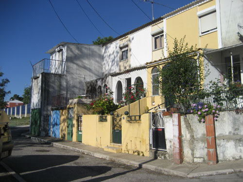
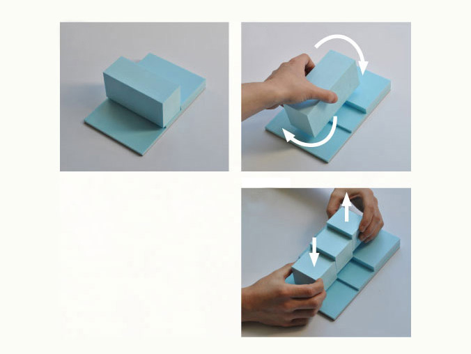
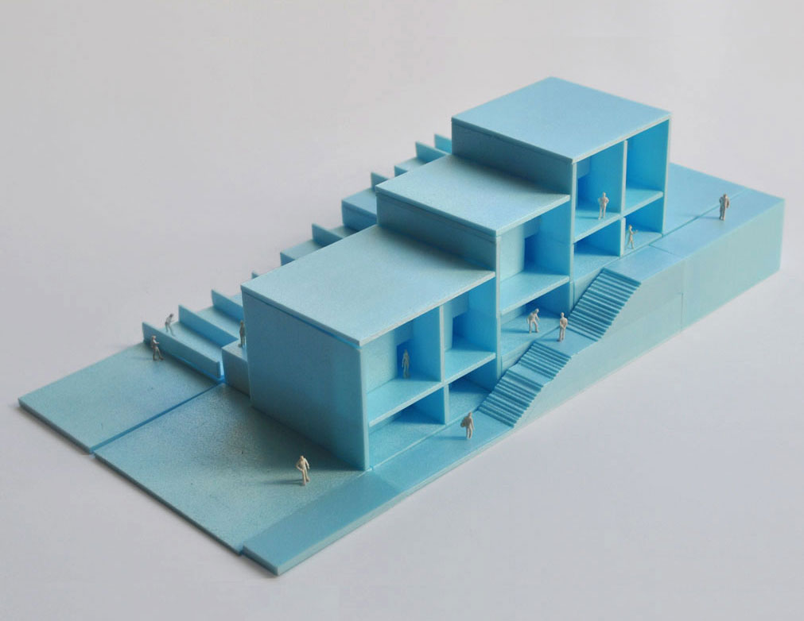
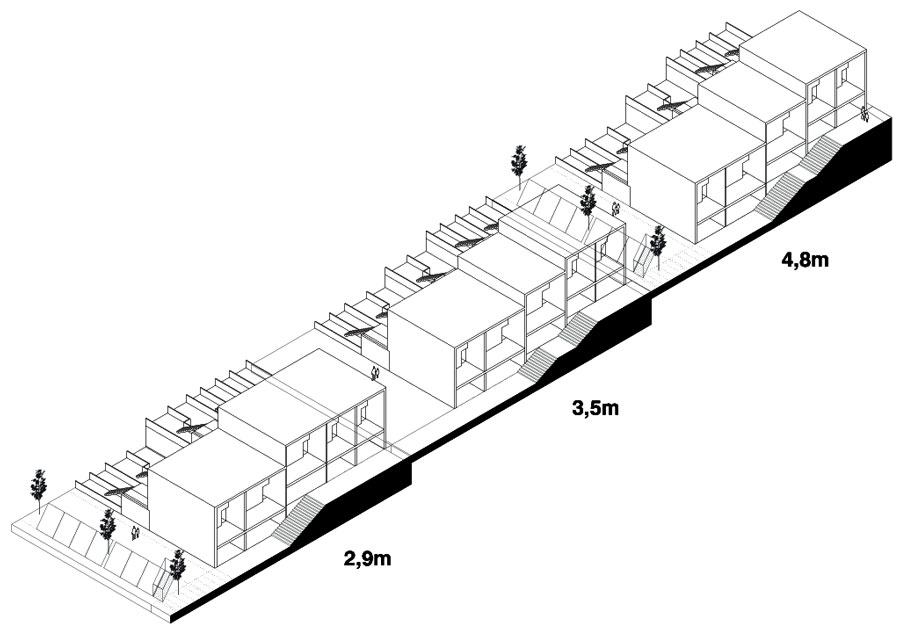
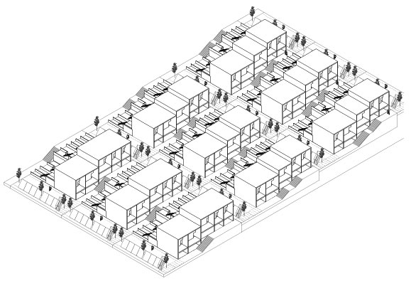
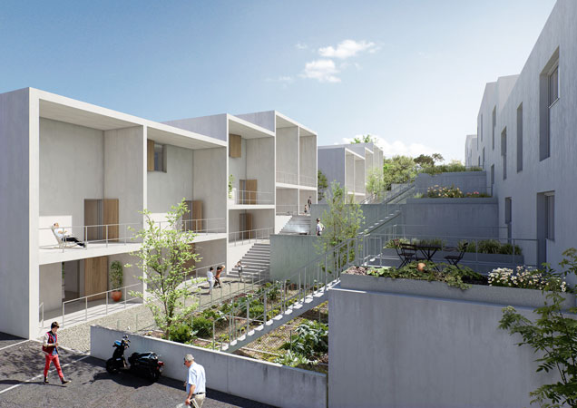
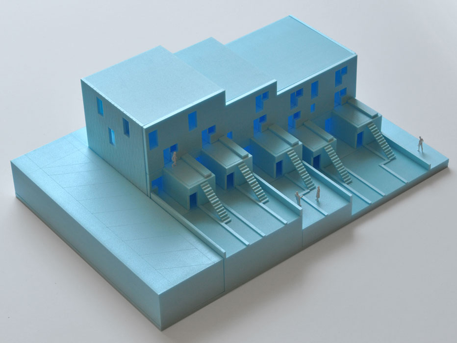
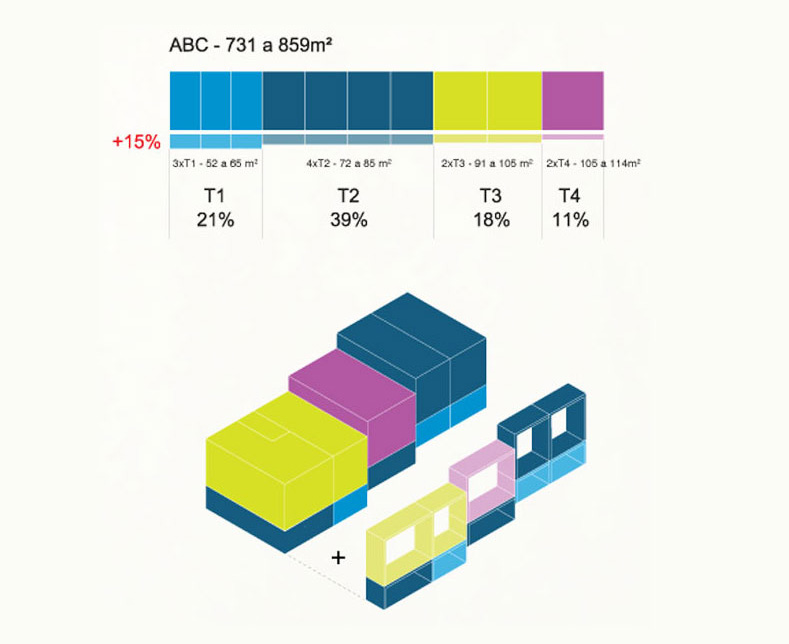
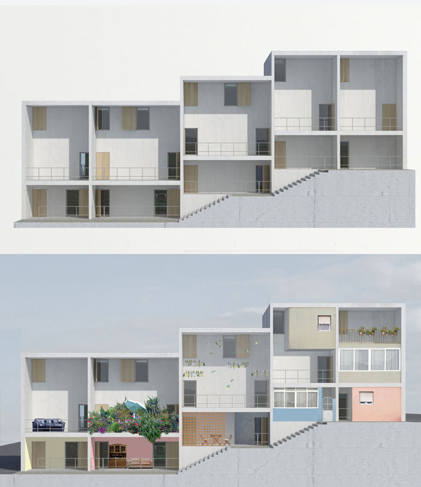

Bairro da Boavista
Competition 2nd Prize - Social Housing - Lisbon - 2013

Introduction
The original neighbourhood built in the 40’s draws its qualities and flaws from its isolation: the proximity to nature and low density are typical amenities of residential suburbia, while the difficult access from the city centre perpetuates the stigma of a troubled neighbourhood.
Vertical re-housing experiments from the 80’s and 90’s have already proven inadequate: the buildings witnessed adjustment problems from the residents with consequent neglect of collective spaces. This lack of identification with the so called “containers” contrasts with the two storey row houses, where intensive occupation has blurred the limit between public and private: gardens, sofas, birdcages, tiles, iron gates, curtains, all contribute to the affective customization of each house.
The new neighbourhood
The rotation of the building within the plot allows for each house to have a visual connection with the pinewoods of Monsanto, cross ventilation and individual access protected from car traffic.
Each building is divided in three modules, adjustable to the topography. The space in between forms a pedestrian network of stepped streets, a traditional model from Lisbon’s city centre that will lend each building its own character.




The building as a street
The south facing porches offer an individual stage to each house to be occupied overtime through everyday use, or for a future expansion of interior inhabitable area, always within the maximum ground floor area allowed.
The unfinished facade is the natural extension of the interior space, playing a key role on the house's passive thermal comfort, by providing shade during summer and allowing for solar gains in wintertime, but also functioning as a filter to the outside, a mediation zone between private and public space that will reflect in time the diversity of the inhabitants.


Typologies
Every house has direct connection from the kitchen to an individual allotment that can be accessed from the pedestrian street. One story apartments are located on the ground floor, and two storey apartments are on top, accessible through a staircase from the allotment. The compact interior layout avoids the use of circulation areas which translates into important area gains for usable space.


Team: João Moura Fagulha, Raquel Maria Oliveira, João Prates Ruivo, Raúl Moura, Tudor Vasiliu. Renders: Panoptikon. Client: Lisbon Municipality.